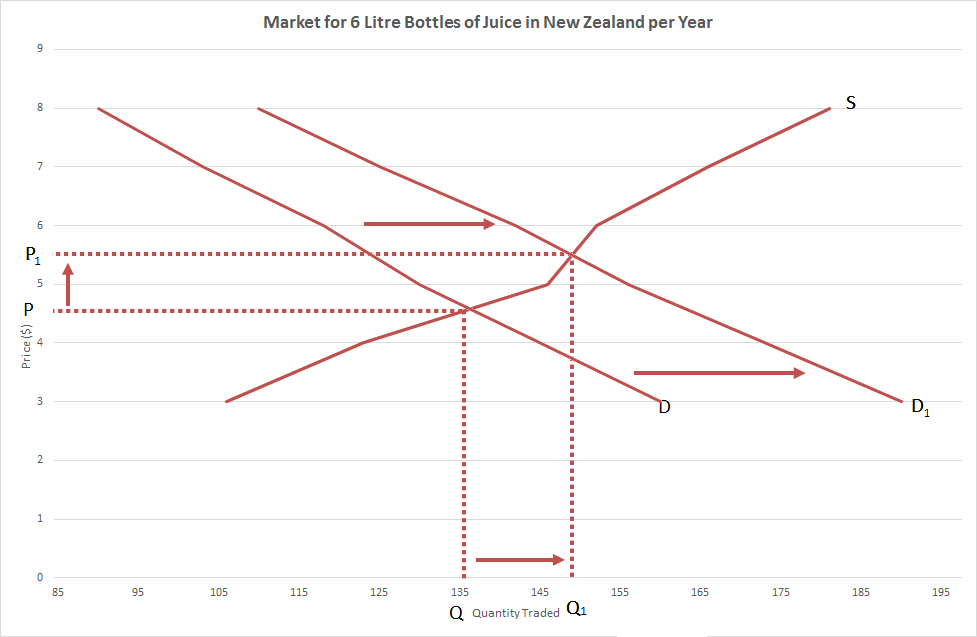
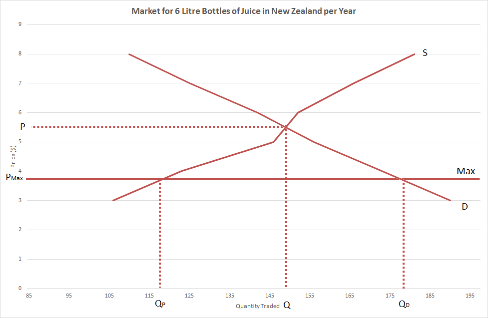

Market Demand and Supply
On the previous two pages we were looking at individual’s demand and supply, however, when looking at the market as a whole, we need to use market demand and supply. To do this we simply add together all the different individual demands and supplies for a particular market at all the different price points. For example:
| Market For 6 litre Bottles of Juice in New Zealand per Year | ||||
|---|---|---|---|---|
| Price ($) | Producer A's Supply (Million) | Producer B's Supply (Million) | Producer C's Supply (Million) | Market Supply (Million) |
| 3 | 35 | 35 | 36 | 106 |
| 4 | 38 | 42 | 43 | 123 |
| 5 | 45 | 50 | 51 | 146 |
| 6 | 49 | 51 | 52 | 152 |
| 7 | 55 | 55 | 56 | 166 |
| 8 | 60 | 60 | 61 | 181 |
Market Graph
Like with demand and supply, we can create a graph using our market demands and supplies which we use to show us what price level will be set by the market.
{kind=link}
As we can see here the graphs intercept at the price of $5.50 and a quantity traded of 149 million bottles of juice per year. This point is known as the market equilibrium because market demand is the same as market supply resulting in all stock being sold.

In the situation above the current price isn’t set at the actual market price and is in fact set above it. We can describe what will happen by saying: At a price of $7, 6 litre bottles of juice will be over produced resulting in a surplus. This will lead to producers lowering their price to try and sell excess stock. As the price falls demand will increase according to the Law of Demand as it is now relatively more affordable for consumers. Supply will decrease according to the Law of Supply as it is now relatively less profitable for producers. This will continue until the price of $5.50 is reached and the market clears.
Shifting Demand or Supply Curve
When working at a market curve you can have one or more events happen that can shift the demand and/or supply curve. This will have a similar effect as above and it will result in either the current price being above or below the market equilibrium. For example, if there was a study that showed fruit juice had positive health effects, this would increase taste for juice resulting in the rise in demand and have the following effect:
{kind=link}
At the old equilibrium price of $4.50 per 6 litre bottle of juice, they would be under produced and would result in a shortage. This will lead to consumers bidding up the price to try and buy limited stock. As the price rises supply will increase according to the Law of Supply as it is now relatively more profitable for producers. As the price rises demand will decrease according to the Law of Demand as it is now relatively less affordable for consumers. This will continue until the new equilibrium is reached at a price of $5.50 and a quantity traded of 149 million units and the market clears.
Maximum and Minimum Price
Within the market there are a variety of reasons that the price for something might be unacceptable, as a result, something needs to be done about it and this is normally left to the government. One of the ways the government has to solve these problems is by setting a minimum or maximum price on the good or service. The point of this is to force the price to be either higher (a minimum price) or lower (a maximum price) than what the market would normally set it at. A very common example of this is the minimum wage. The government sets a minimum price on labour as they believe that the normally wage set by the market would be too low.
Minimum prices and maximum prices aim to do two different things, a minimum price is to make sure producers are getting what the government thinks they deserve and a maximum price is to make sure consumers are paying what the government thinks is affordable. If we look at our example with 6 litre bottles of juice, the government may think that juice producers aren’t earning enough when they manufacture at the equilibrium price of $5.50 and 135 million units. As a result they could put a minimum price on the juice that consumers have to pay, this is the effect it would have:

Alternatively the government might think that consumers are paying too much for juice and put a maximum price on it, this is the effect it would have:
{kind=link}
As we can see, the minimum price results in a surplus, as producers want to produce more at this price but consumers want to buy less. The maximum price results in a shortage, as consumers want to buy more at this price but producers want to sell less. This is one of the major problems with minimum and maximum prices as either a surplus or shortage will form and market forces can't get them back to a equilibrium. This could lead to a black market forming where either consumers that can afford to pay more will buy off producers or producers who are willing to sell for less will sell excess stock to consumers.
Taxes and Subsidies
A tax is something put on a good or service by the government that producers have to pay whenever they sell their product. A tax can be a fixed amount per unit sold e.g. a producer has to pay the government $1 for every litre of petrol sold. Tt can also be a percentage tax e.g. a producer has to pay the government an amount equivalent to 50% of their revenue. A tax will increase the cost of a product and therefore decrease supply resulting in a reduced quantity traded. The two main reasons for a tax are to provide revenue for the government or to increase the price of a product to deter people from a buying demerit goods.
A subsidy is when the government pays a company to produce a product e.g. the government may pay a dairy farmers $0.20 for every litre of milk they produce. This will result in the price of the product falling and therefore make it more affordable for consumers. The government will most likely do this for merit goods.
A tax or a subsidy will result in a decrease or increase in supply respectively. Due to the government being involved two price points will be involved, one for the producer and one for the consumer. Let’s say that there is a new sugar tax introduced so juice producers are taxed $0.33 per litre of juice they produce. This would have the following effect:
{kind=link}
As we can see, the supply curve shifts to the left and the vertical space represents the cost of the tax. The tax results in a decrease in supply and therefore at the old price point of $5.50 there would be a shortage in the market. This will lead to consumers bidding up the price to try and buy limited stock. As the price rises supply will increase according to the Law of Supply as it is now relatively more profitable for producers. As the price rises demand will decrease according to the Law of Demand as it is now relatively less affordable for consumers. This will continue until the new equilibrium is reached where consumers pay a price of $6.50, producers receive a price of $4.50 and there is a quantity traded of 133 million units. The difference in the price consumers pay and the price producers get is represented by the grey area and that is the amount the government gets form the tax.
A subsidy is very similar to a tax. For example, if the government thinks there isn’t enough juice being produced and the price is too high after a study showing health benefits of juice they could put a subsidy of $0.33 per litre on juice produced. This would have the following effect:
{kind=link}
As we can see, the supply curve shifts to the right and the vertical space represents the value of the subsidy. The subsidy results in an increase in supply and therefore at the old price point of $5.50 there would be a surplus in the market. This will lead to producers lowing their price to try and sell excess stock. As the price falls demand will increase according to the Law of Demand as it is now relatively more affordable for consumers. Supply will decrease according to the Law of Supply as it is now relatively less profitable for producers. This will continue until the new equilibrium is reached where consumers pay a price of $4.75, producers receive a price of $6.75 and there is a quantity traded of 162 million units. The difference in the price producers get and the price consumers pay is represented by the grey area and that is the amount the government pays for the subsidy.